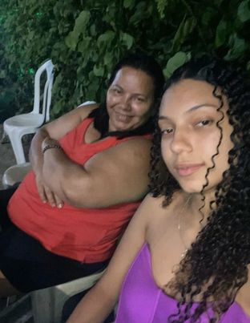

Seja bem vindo ao meu blog
Meu nome é Caroline,tenho 17 anos,nasci no dia 06/12/2006,fui criada com minha vó até os 10 ano hoje em dia moro com minha mãe e minha irmã,tenho 1,60 de altura,estou no 1° ano do ensino medio na escola EEEM Dr Francisco Freitas Lima em Vila Velha,moro em Vila Velha-Paul.Comecei a fazer curso de informatica ao meus 15 anos curso basico,esse ano de 2024 voltei a fazer um curso mais avançado que é o Tecnico De informatica Para Internet e estou apredendo um pouco mais!!!fiz esse Blog para apresentar o meu currículo na Web.
sobre mim
vou fala sobre mim um pouco:entao meu nome é caroline,tenho 17 anos,moro com minha mãe,amo sair pra ser diverti com minhas amigas ir em shopping,amo também sair em familia ate sozinha também as vezes é bom,amo cozinhar fazer umas cozinhar diferentes
curiosidade
Gosto muio de sair sozinhar pra me diverti,comer,amo ser sozinha as vezes também,gosto de joga alguns jogos
quantidade e defeitos
Vou fala uma qualidade sobre,sou muito gente boa amo ajuda as pessoas,agora um defeito meu é erra quando alguém erra comigo,odio vingança maia as vezes é necessario

Nivel de escolaridade:
fazer o 1 ano do ensino medio
curso:
Cursando no senac fazendo curso de Tecnico De Imformatica
Ano de conclusão:
2026